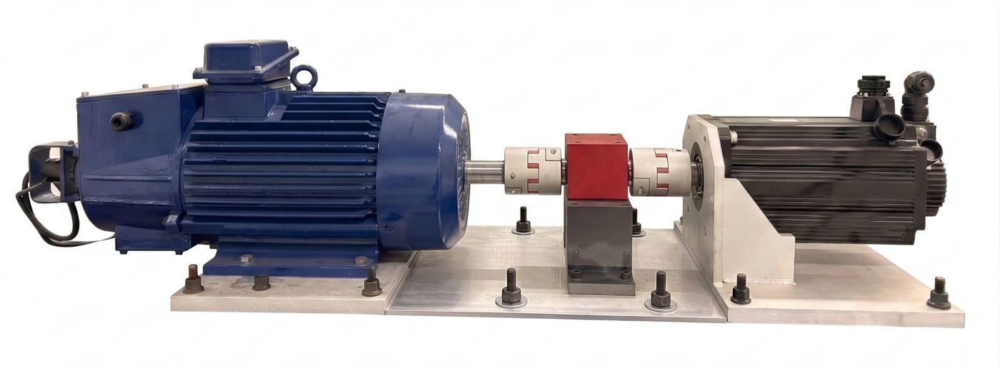
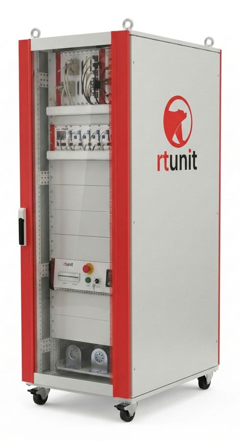
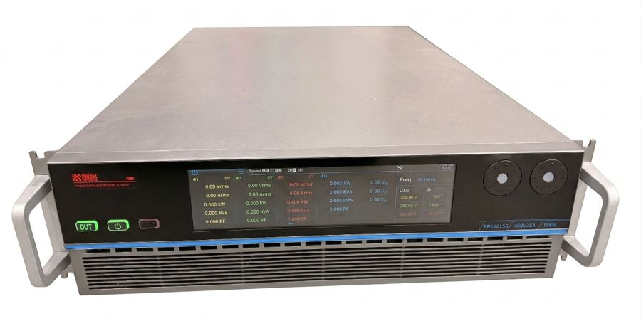
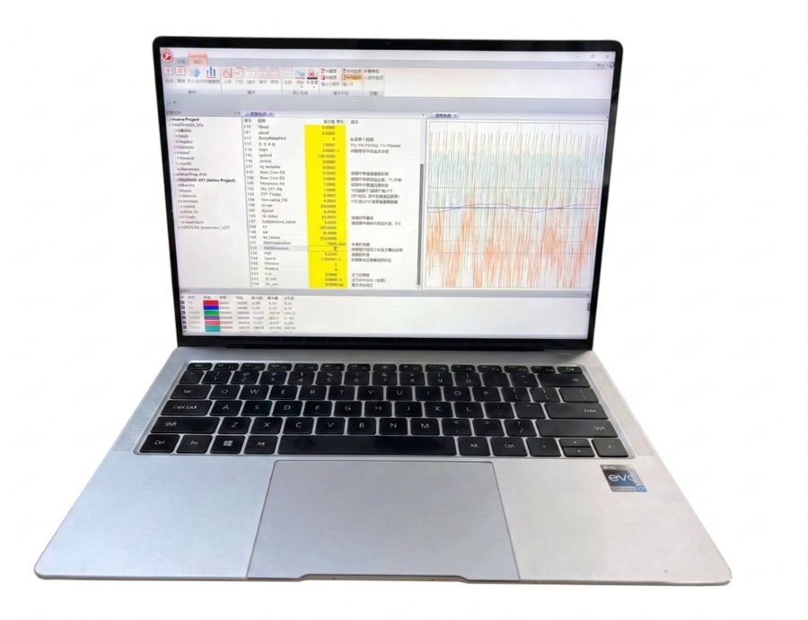

Removing the rotor encoder makes wind turbines cheaper and more reliable — but until now, no sensorless DFIG could survive the deep voltage dips that grid codes demand. We show the first experimentally verified sensorless DFIG that rides through an 80% voltage dip, with the rotor-angle estimate staying within a few degrees. 去掉转子编码器可以让风电机组更便宜、更可靠——但此前还没有任何无位置传感器的双馈风机，能在电网规范要求的深度电压跌落下稳定运行。本文给出了首个经物理实验验证、可穿越 80% 电压跌落的无传感器 DFIG 控制方案，全过程转子位置估计误差仅为几度。
Schematic cross-section, not to scale. Rotor motion is illustrative and slowed; the angular separation of the reference and estimate follows the measured error. Outer ring: grid voltage. Lower trace: measured angle error. 机械剖面为结构示意，非尺寸图。转动为慢速演示，两条角度线的夹角取自实测估计误差；外环显示电网电压，下图显示实测角度误差。
A DFIG's stator is wired straight to the grid. When the voltage suddenly drops, the stator flux \boldsymbol{\psi}_{s} cannot jump, so a natural, non-rotating DC flux appears and decays with the stator time constant \tau_s=L_s/R_s (eq. 7). An asymmetric fault adds a counter-rotating negative-sequence flux as well. 双馈电机的定子直接接入电网。电压骤降时，定子磁链 \boldsymbol{\psi}_{s} 不能突变，于是激发出一个不旋转的暂态直流磁链，并按定子时间常数 \tau_s=L_s/R_s 衰减（式 7）。不对称故障还会额外产生反向旋转的负序磁链。
Seen from the spinning rotor, these components sweep the rotor windings at high speed, inducing a large EMF and fast-changing currents — exactly the signals a sensorless observer relies on. Drag the dip depth and watch the flux leave its circle. 从旋转的转子看，这些分量以很高的相对速度切割转子绕组，感应出很大的反电势和剧烈变化的电流——而这些正是无传感器观测器赖以工作的信号。拖动跌落深度，看看磁链如何偏离原来的圆。
Large-signal transients make conventional observers diverge. → An RCMO with an arctangent-based linear error function, proven stable.大信号暂态会让传统观测器发散。→ 采用反正切线性误差函数的 RCMO，并给出稳定性证明。
Try it →动手试试 →Rejecting sensor DC offset also erases the real transient DC flux. → A mode-switching flux observer.抑制传感器直流偏置时，会把真实的暂态直流磁链一起滤掉。→ 模式切换磁链观测器。
Try it →动手试试 →Fault overcurrents saturate the core and shift L_{m}. → A simple look-up-table correction, updated instantly.故障过流使铁心饱和，L_{m} 偏离额定值。→ 简单的查表（LUT）参数修正，可瞬时更新。
Try it →动手试试 →The rotor-current MRAS observer (RCMO) compares the reference-model current \boldsymbol{i}_r^s, calculated from stator quantities, with the adaptive-model current \hat{\boldsymbol{i}}_r^s, obtained by rotating the measured rotor current through the estimated angle. A PI loop drives their phase difference to zero. The question is how to measure that difference. 转子电流型 MRAS 观测器（RCMO）把由定子量计算的参考模型电流 \boldsymbol{i}_r^s，与按估计角度变换后的自适应模型电流 \hat{\boldsymbol{i}}_r^s 进行比较，再由 PI 环把两者的相位差调到零。关键在于：这个相位差该怎么计算。
Here × denotes the scalar cross product in the αβ plane; atan2(y, x) returns the principal angle in (−π, π]. The unity-gain relation assumes nonzero current vectors and an unwrapped local angle error; fixed poles refer to the ideal observer loop.其中 × 表示 αβ 平面内的标量叉积；atan2(y, x) 返回 (−π, π] 内的主值角。单位增益关系以电流向量非零、局部相角连续为前提；固定极点指理想观测器环路。
The conventional cross product is only linear for small errors, and its gain scales with the current magnitudes, which swing wildly during a fault. The arctangent form returns the angle itself: the loop becomes linear, with fixed poles from s^2+K_p s+K_i=0 (eq. 19), whatever the currents do. 传统叉乘只在小误差时近似线性，而且增益随电流幅值变化——故障中电流幅值剧烈波动。反正切形式直接给出角度本身：整个环路变成线性系统、极点固定，由 s^2+K_p s+K_i=0（式 19）决定，与电流如何变化无关。
The observer needs the stator flux \boldsymbol{\psi}_s=\int(\boldsymbol{v}_s-R_s\boldsymbol{i}_s)\,\mathrm{d}t. Real sensors add a small DC offset, so a pure integrator drifts away. The usual fix is a DC-blocking (low-pass) integrator, but during a fault it also erases the genuine DC flux from eq. (7). That is a conflict no single filter can resolve. 观测器需要定子磁链 \boldsymbol{\psi}_s=\int(\boldsymbol{v}_s-R_s\boldsymbol{i}_s)\,\mathrm{d}t。实际传感器存在微小的直流偏置，纯积分器会不断漂移。常规做法是使用隔直（低通型）积分器，但在故障期间，它会把式 (7) 中真实存在的直流磁链也一并滤除——这是任何单一滤波器都无法调和的矛盾。
The proposed observer switches modes. In steady state it suppresses drift in closed loop and slowly learns the sensor offset V_{\mathrm{off}}. When the stator voltage falls below a threshold, it switches to open-loop pure integration, compensated with the frozen pre-fault offset (eq. 12). It stays there until shortly after clearance. 本文的观测器会切换工作模式。稳态时，以闭环方式抑制漂移，并缓慢辨识传感器偏置 V_{\mathrm{off}}；一旦定子电压低于阈值，就切换为开环纯积分，并用故障前冻结的偏置进行补偿（式 12），直到故障清除后一小段时间才切回。
Machines are designed to run near the knee of the magnetising curve. The overcurrent at fault inception pushes the air-gap flux \boldsymbol{\psi}_m=\boldsymbol{\psi}_s-L_{\sigma s}\boldsymbol{i}_s (eq. 13) past the knee, and the mutual inductance L_{m} collapses. Online identifiers are far too slow for a transient that is over within milliseconds. 电机通常设计在磁化曲线的膝点附近运行。故障瞬间的过电流把气隙磁链 \boldsymbol{\psi}_m=\boldsymbol{\psi}_s-L_{\sigma s}\boldsymbol{i}_s（式 13）推过膝点，互感 L_{m} 随之大幅下降。在线辨识方法的速度远远跟不上这种毫秒级的暂态。
The fix is deliberately simple. The L_{m}–|\boldsymbol{\psi}_{m}| relation is characterised once with a no-load test and stored as a table. Since |\boldsymbol{\psi}_{m}| already comes from the flux observer, L_{m} is corrected at every sample at practically no cost. Drag the operating point into saturation. 解决方法刻意保持简单：通过一次空载试验标定 L_{m}–|\boldsymbol{\psi}_{m}| 关系并存成表。由于 |\boldsymbol{\psi}_{m}| 本来就由磁链观测器给出，每个采样周期都能修正 L_{m}，几乎不增加计算量。把工作点拖进饱和区试试。
Curve shape follows Fig. 4 of the paper (typical characteristic, normalised to the rated knee point). Errors are evaluated with eq. (8) using the per-unit parameters of the 5-kW test machine, with the stator current lagging the flux by 80°.曲线形状与论文图 4 一致（典型特性，以额定膝点归一化）。误差按式 (8) 计算，参数取 5 kW 实验电机的标幺值，定子电流滞后磁链 80°。
The measured records behind the paper’s figures (2 kHz recorder, displayed at 1 kHz) are shown side by side: sensorless control on the left, encoder-based control on the right. Corresponding plots share time and amplitude scales to compare the transient responses directly.下图回放论文中的实测记录（录波 2 kHz，网页显示 1 kHz）。左列为无位置传感器控制，右列为有位置传感器控制；对应波形采用相同的时间轴和纵轴范围，可直接比较两者的动态响应。
All runs are aligned at the fault instant. When an observer loses the rotor position, the coordinate transformation goes wrong, the stator current surges past the protection threshold and the machine is tripped off the grid.所有记录都按故障发生时刻对齐。观测器一旦丢失转子位置，坐标变换就会出错，定子电流冲过保护阈值，电机随即被保护动作切离电网。
| Method方法 | Test condition测试工况 | Peak |\Delta\theta_r| before trip / in fault跳闸前 / 故障中 |\Delta\theta_r| 峰值 | FRT result穿越结果 |
|---|
A four-pole 5-kW DFIG is driven by a prime mover that emulates the wind, and a programmable AC source emulates the grid faults. Control runs on an RTU-BOX206 real-time controller (TI TMS320F28377D DSP). The real sensors carry real DC offsets.一台四极 5 kW 双馈电机由原动机拖动以模拟风况，三相可编程交流电源模拟各类电网故障。控制算法运行在 RTU-BOX206 实时控制器（TI TMS320F28377D DSP）上；所用的都是真实传感器，也就带着真实的直流偏置。




| Rated power额定功率 | 5 kW |
| Rated stator voltage / current额定定子电压 / 电流 | 400 V / 6.1 A |
| Rated rotor current额定转子电流 | 2.96 A |
| Rated speed / frequency额定转速 / 频率 | 1800 rpm / 50 Hz |
| R_s / R_r | 1.726 Ω / 2.020 Ω |
| L_{\sigma s} / L_{\sigma r} | 3.76 mH / 4.85 mH |
| L_m | 186.4 mH |
| Pole pairs极对数 | 2 |
W. Zeng, T. Wang, Y. Wang, H. Wu, X. Meng, C. Zhao, Z. Zhang, and L. Wu, “Sensorless Control of Doubly-Fed Induction Generators with Grid Fault Ride-Through Capability,” IEEE Transactions on Energy Conversion, 2026.
DOI: 10.1109/TEC.2026.3738362 Early Access在线优先出版
@article{Zeng2026Sensorless,
title = {Sensorless Control of Doubly-Fed Induction Generators
with Grid Fault Ride-Through Capability},
author = {Zeng, Wenbo and Wang, Tao and Wang, Yuhao and Wu, Han and
Meng, Xiang and Zhao, Chen and Zhang, Zhenxiao and Wu, Lijian},
journal = {IEEE Transactions on Energy Conversion},
year = {2026},
doi = {10.1109/TEC.2026.3738362}
}